| Volume 1, Issue 2 - Year 2012 - Pages 28-35 | View PDF (Full-text) |
| DOI: 10.11159/ijmem.2012.004 | Linked References |
| ISSN: 1929-2724 | |
Simulation of a Filtration Process by DEM and CFD
Stein Sören, Tomas Jürgen
Otto-von-Guericke University Magdeburg, Institute for Process Engineering
Universitätsplatz 2, 39106 Magdeburg, Germany
soeren.stein@ovgu.de; juergen.tomas@ovgu.de
Abstract- The solid-liquid separation process by filtration is one of the fundamental processes of mechanical process engineering. In aqueous media, particles form agglomerates within the micron range. In this range of particle sizes, solid–liquid separation is influenced by interfacial effects of the agglomerates rather than by size of the primary particles. With the knowledge of interaction forces, one is able to intensify the filtration process. The aim is to predict the filtration behaviour by modelling the process and simulate it coupling Computational Fluid Dynamics (CFD) and Discrete Element Method (DEM). In this work simulations of flocculated and non-flocculated particle suspensions have been done for pressures between p=200 – 1000kPa. Filtration and consolidation experiments were used to compare and validate the simulation results. The flow rate during generation and compression of the porous ultrafine particle packings were simulated within the micron range. The decreasing filtration times of flocculated suspensions could be confirmed with the simulations.
Keywords: Filtration, CFD, DEM, Simulation, Modelling
© Copyright 2012 Authors - This is an Open Access article published under the Creative Commons Attribution License terms. Unrestricted use, distribution, and reproduction in any medium are permitted, provided the original work is properly cited.
1. Introduction
Depending on the dewatering apparatus the expression process can be distinguished into the filtration sub-process and the consolidation sub-process. The whole process is referred to gauging or dewatering process, which is usually realised in the praxis in the so called press-filters (Alt, 1976). The compressible cake consists of fine particles which are more or less compressible dependent mainly on the particle contact stiffness. The cake height hF increases during the filtration time. After filtration it is convenient to consolidate the cake by applying a mechanical pressure in this second stage so that the cake height hc decreases. The decreasing volume of the cake leads to a minimum amount of water in the pores. As a result, a very dense particle packing saturated with liquid is obtained.
In aqueous media the particles form aggregates within the micron range. In this range of particle size solid–liquid separation is influenced by interfacial effects of the aggregates rather than by the size of the primary particles (Gösele, 1995). The change of electrostatic repulsive and van-der-Waals attractive interactions between particles may result in the flocculation of the particles and lead to a formation of flocs and produce a good separation. One of the well known physical models of colloid stability is known by the DLVO-Theory (Derjaguin, 1941; Verwey, Amsterdam 1948).
The flow rate during generation and compression of the poros ultrafine particle packings can be simulated coupling the discrete element method and fluid dynamics within the micron range.
The fluid coupling is done by implementation of a "fixed course-grid fluid scheme" in the DEM-software. The scheme solves the locally averaged, two-phase (fluid and solid) mass and momentum equations for the fluid velocities and pressures (Bouillard, 1989), which can be considered a generalized form of the Navier-Stokes equation for a fluid interacting with a solid phase. The fluid solver uses the SIMPLE scheme (Patankar, 1980) for incompressible viscous or inviscid flow on a fixed rectangular geometry aligned with the Cartesian axes. The internal discretization is fixed and regular. The underlying coupling formulation assumes that the particle radius is small compared to the length of a single fluid element. There is no interaction with walls, and no turbulence terms are added at any Reynolds number. Fluid boundary conditions may be applied at the outside of the fixed rectangular geometry. The available conditions are fixed normal velocity or fixed pressure, and fixed or free shear velocity. The earliest work in this method of particle/fluid interaction was done by Tsuji (Tsuji. Y, 1993; Kawaguchi, 1992), and the current implementation is discussed in Shimizu (Shimizu, 2004). This approach does not include a mechanism for generation of pore pressure under strain (Itasca Consulting Group Inc., 2008).
Within the DEM-software the solution is "Pseudo-3D." The Navier-Stokes equation is solved in two dimensions, but the porosity is calculated in terms of the volume of spheres. This is because the 2D area of the circles would underestimate the porosity and overestimate the particle forces compared to 3D observations.
For the purpose of the porosity calculation, the particles are spheres, and the cells are assumed to have an out-of-plane length of the maximum particle diameter in the model. The volume of particles with a diameter smaller than the maximum particle diameter is scaled by a factor of (dmax / dparticle) to maintain the Pseudo-3D geometry (for the porosity calculation only) (Itasca Consulting Group Inc., 2008).
Actual publications researching the influence of the agglomeration, caused by DLVO interactions, on the filter cake generation are for example (Schafer et. Al, 2010). The authors suggest a combined calculation method, where the cake generation is simulated with a stochastic rotation dynamic (SRD) and a molecular dynamic method. They established the dependency of permeability of the particle size and porosity and therewith of the agglomeration of the particles. Keller et al. (Keller, 2010) presented a numerical simulation study based on a superposed grid technique, which includes the diverse microscopic effects of the double layer interaction for a small particle number. For larger particle numbers a combination of SRD and DEM is used to simulate the agglomeration- and cake generation process. Peng et al. (Peng, 2008) developed a DEM based model, which considers the Brownian motion and external movement due to electrophoresis as driving forces for the particle transport in colloidal suspensions. The researched the influence of the pH-value and volume concentration on the formation of alumina agglomerates using the DLVO theory. Dong et al. (Dong, 2009) studied by DEM the filter cake generation and the filter cake growth. They considered the van-der-Waals attraction and simulated the influences of material properties of particle and fluid as well as external conditions.
This study makes a contribution to better understand the influence of interparticle interaction forces like van-der-Waals attraction and electrostatic repulsion on the generation of a filter cake. The two extremal cases of maximum agglomeration and absolute stable suspension were simulated and compared. The focus of the simulation results are the micro glass spheres, although lime stone and titanium particles were simulated as well.
2. Simulation Model
2.1 Discrete Element Method (DEM)
The discrete element method was introduced by Cundall (Cundall, 1971) for the analysis of rock mechanics problems and then applied to soils by Cundall and Struck (Cundall, 1979) in 1979.
The model is composed of discrete particles that displace independent of one another, and interact only at contacts or interfaces between the particles. The particles are assumed to be rigid, and the behavior of the contacts is characterized using a soft contact approach. A finite normal stiffness is taken to represent the measurable stiffness that exists at a contact and the mechanical behavior of such a system is described in terms of the movement of each particle and the inter-particle forces acting at each contact point. The laws of motion provide the fundamental relationships between particle motion and the forces causing that motion (Itasca Consulting Group Inc., 2008). In DEM simulation, a particle possesses the translational and rotation motion which can be described by the mass m of a particle i, the particle velocity vi or particle angular velocity ωi, the force Fi and the momentum Ti.
|
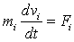 |
(1) |
|
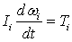 |
(2) |
In order to describe the particle particle or particle wall interactions the contact model according to Hertz and Mindlin is often used. It consists of many known material parameters and describes the normal and tangential forces acting on a particle within the contact zone. The normal force can be calculated with equation (3), where EM,ij is the average Young's modulus of particle i and j, rP,M is the average particle radius and sN is the ovelap of the particles vertical to the contact surface.
|
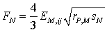 |
(3) |
The damping force FN,D, which considers the energy dissipation, depends on the particle mass mP, the coefficient of restitution and the relative velocity of the contact point in normal direction.
Regarding the Coulomb law fully-developed friction between 2 particles is taken into account.
|
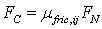 |
(4) |
The used program PFC calculates the contact force in normal direction according to a parallel connection of a spring- and dashpot element and an adhesive or repulsive force as a result of surface charges of the particle. The contact force in tangential direction results from the parallel connection of a spring- and dashpot element and their series connection with a friction element. Figure 1 shows this arrangement graphically.
The resulting contact force in normal direction Fk,N is the sum of the spring force Fspring, damping force Fdamp and the adhesive or repulsive force. Because of the surface charge Fsurface.
|
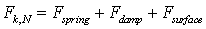 |
(5) |
These forces can be calculated by equations 6 - 8.
|
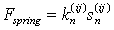 |
(6) |
|
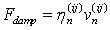 |
(7) |
|
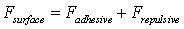 |
(8) |
The adhesive force is the van der Waals force between 2 particles and can be calculated with the Hamaker constant CH.
|
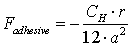 |
(9) |
The repulsive force is a function of the electrolyte concentration c in the suspension, particle radius r, Avogadro constant NA, Boltzman constant KB, absolute temperature T, the Debye Hückel parameter κ and the Zeta-potential ζ.
|
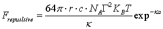 |
(10) |
|
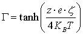 |
(11) |
Combining equations 8-11 the surface force can be treated as the product of a specific surface energy, which consist of the mentioned parameters, and the particle diameter d.
Additionally to the contact law the critical time step is necessary to get a stable simulation. The critical time step is calculated from the oscillation of a one dimensional massless spring with stiffness k and a connected mass point with mass m. This results to the critical time step for the translation:
|
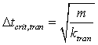 |
(12) |
From equation (12) one can see, that for ultrafine particles (d<10μm) the critical time step can reach values of Δtcrit < 10-9s. The limiting CPU capacity makes real time simulations of such systems impossible. That's why the model size is much smaller than the experimental size.
2.2. Coupled DEM and CFD
To couple the DEM with the fluid dynamics the so called fixed coarse-grid fluid flow scheme is introduced in the DEM-software. As aforementioned the scheme solves the locally averaged, two-phase mass and momentum equations for the fluid velocities and pressures, which can be considered a generalized form of the Navier-Stokes equation for a fluid interacting with a solid phase. The fluid solver uses SIMPLE scheme (Patankar, 1980) for incompressible viscous or inviscid flow on a fixed rectangular geometry aligned with the Cartesian axes (Itasca Consulting Group Inc., 2008).
The Navier-Stokes equations for incompressible viscous flow can be modified to include the effect of a particulate solid phase mixed into the fluid. Assuming the focus on average effects over many particles, one can characterize the effects in terms of porosity, ε, and a coupling force, fb (Bouillard, 1989).
|
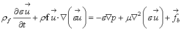 |
(13) |
|
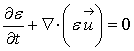 |
(14) |
where fb is a body force per unit volume. The fluid velocity is denoted as  . In porous flow, there are two velocities: the quantity 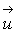 is the intersticial or pore velocity, and the quantity 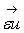 is the macroscopic, empty tube or Darcy velocity. This pore velocity is the effective velocity within the fluid elements when it moves through the pore space. The averaged macroscopic velocity is equivalent to the volumetric flow rate per unit cross-sectional area and equals the empty tube flow rate (Itasca Consulting Group Inc., 2008).
. In porous flow, there are two velocities: the quantity 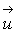 is the intersticial or pore velocity, and the quantity 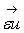 is the macroscopic, empty tube or Darcy velocity. This pore velocity is the effective velocity within the fluid elements when it moves through the pore space. The averaged macroscopic velocity is equivalent to the volumetric flow rate per unit cross-sectional area and equals the empty tube flow rate (Itasca Consulting Group Inc., 2008).
The drag force applied by the particles to the fluid in each fluid element is defined as
|
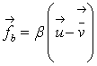 |
(15) |
where  is the fluid velocity and 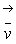 is the average velocity of all particles in a given fluid element.
is the fluid velocity and 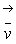 is the average velocity of all particles in a given fluid element.
The coefficient β is calculated in one of two ways, depending on the porosity of the fluid element. For low values of porosity (ε<0.8) the ERGUN relation (Ergun, 1952) is used.
|
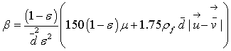 |
(16) |
For higher values of porosity (ε>0.8), β is derived from the corrected nonlinear drag force exerted on a spherical particle by a fluid (Wen, 1966).
|
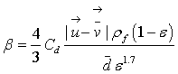 |
(17) |
where Cd is a turbulent drag coefficient defined in terms of the particle Reynolds number:
|
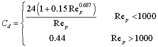 |
(18) |
Where Rep is:
|
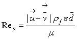 |
(19) |
3. Experimental
3.1 Material
The samples used in the filtration experiments were limestone, titanium dioxide and micro glassspheres with average particle sizes d50 of 1.2, 0.6 and 5.8 μm respectively. The properties are shown in table 1. The suspensions were prepared with distilled water and solid to reach 13% volume fraction. To test the influence of electrolytes on the filtration process a 0.1 M suspension of sodium chloride, calcium chloride and aluminium chloride was produced. The pH-value was changed between 2 and 12 by addition of nitric acid and caustic soda solution to control the Zeta-potential.
|
|
CaCO3 |
TiO2 |
Glass (SiO2) |
|
Solid density rs in kg/m³ |
2740 |
3708 |
2500 |
|
Particle size d50 in Μm |
1.2 |
0.6 |
5.8 |
|
Zetapotential ζ in mV |
-40 |
-50 |
-41 |
|
Hamaker-Constant CH,sls in 10-20 J |
3.6 |
5.42 (Fernandez-Varea, 2000) |
0.43 (Fernandez-Varea, 2000) |
|
Solubility in Water at 25°C in mol/l |
5.8·10-5 |
- |
- |
|
BET-Surface in m2/g |
6.1 |
9.38 |
3.9 |
3.2 Test Device
To evaluate the model, the experimentally measurement of material properties as the packing density εs,0 and permeability k0 at ps = 0, compressibility index β, permeability fitting constant δ, isostatic tensile strength pa, lateral pressure ratio λw, wall friction angle φW and the filter medium resistance of pure medium RFM,0 is necessary. These parameters were determined using the Press-Shear-Cell (Reichmann, 2000) (Figure 2). It is a combination of a laboratory filter, a compression-permeability cell and a medium pressure ring shear cell. Filtration experiments and in-situ shear experiments with the filter cakes can be carried out after the expression. This test apparatus is suitable to be applied on filtration processes at constant pressure. Compression-permeability tests are used to determine the packing density εs and the permeability k. By compression experiments, filtration and consolidation dynamics can be evaluated.
4. Results and Discussion
In the present work, all particles are randomly located having a starting velocity of v=0 without overlapping of particles for the initial setting. The filtration pressure during the simulation is p=200 kPa , the particle number depends on the model size to reach 13% volume fraction. The volume flow rate of the filtrate is calculated during each time step with the Darcy equation. Therewith the time depending filtrate volume can be calculated for each time step. The simulation ends, if all particles have been settled for the given pressure. The filter can be simulated with point walls, which are placed in the distance of the minimum particle diameter at the bottom of the model.
To simulate a flocculation of the particles, an attractive force according to the DLVO theory (Derjaguin, 1941; Verwey, Amsterdam 1948) was introduced (equation 12).
The tables and figures shown below explain the results for the micro glass particles. The simulations of the limestone and titaniumdioxide particles were made in the same way.
As mentioned in the theoretical part, DEM simulations with ultrafine particles are very time consuming. The simulation time is governed mainly by the critical time step and the particle number. Two simplifications were made to save CPU time: The simulations were made only in two dimensions because the change of porosity and filter cake resistance during the filtration process depends mainly on the height of the filter cake. The figures shown below can be understood as a cutting plane through the generated three dimensional filter cake. In order to simulate real particle sizes but safe additional computational time, the particle number can be decreased, guaranteeing representative simulation results. This is the second simplification. Therefore the particle number was decreased as long as the porosity of the filter cake could be represented (Figure 3). The critical model size, which was found, is 0.5 x 0.5 mm2 with a minimum number of 1800 particles.
Figure 4 shows the visualization of the 2D-model. The fluid behaviour is computed within a fixed, orthogonal grid oriented parallel with the global coordinate system. Around the model there are additional fluid cells introduced considering the boundary conditions.
The aim of the simulations is to show and understand the differences of the structure of filter cakes, which are generated from a stable or flocculated suspension.
If large repulsive interactions are dominant (stable suspension) the particles are completely dispersed and deposit as single particles. Those suspensions produce a compact filter cake (figure 5 (a)) with large cake resistances and poor permeabilities.
Assuming that only attractive forces appear between the ultrafine particles within the suspension (comparable to the isoelectric point) the flocculation reaches its maximum value. Large flocs deposit very fast and produce a loose unconformable structure (figure 5 (b)) which shows a large compressibility. Due to the flocculation the filtration time can be decreased.
|
|
Stabilized Exp. Sim. |
Flocculated Exp. Sim. |
|
Filtration time reduction by flocculation |
- - |
-51% -43% |
|
Average porosity ε |
0.43 0.449 |
0.601 0.654 |
|
Permeability k in 10-14 m² |
2.47 3.0 |
13.8 23.6 |
Table 2 shows the results of the DEM simulation compared to the experimental results. Due to the flocculation a time reduction of 43% could be achieved. The differences of porosity and permeability of simulation and experiment have different reasons. They appear because of the limited representative volume element size (real size is because of limited CPU capacity not possible) on the one hand. On this account the upper filter cake layers are missing, which cause an additional compression of the filter cake layers at the bottom. Furthermore the limited particle size distribution causes higher porosities as well as the 2D-simulation itself, although the solution is "Pseudo-3D".
The smaller the particle size, the higher is the influence of attractive van-der-Waals and repulsive electrostatic forces. And the more particles agglomerate because of the van-der-Waals attraction, the higher is the compressibility of the filter cake. This results in high porosities along the filter cake height at the end of the cake formation. This well known behaviour could be observed during the simulation of the filtration process of the flocculated suspensions.
The time dependent curves of the porosity within the lowest fluid cell was recorded and compared for the two conditions. Figure 6 shows that the cake porosity decreased quickly at the beginning and then approached equilibrium values. The equilibrium state is reached faster in the case of a flocculated suspension, the porosity is much higher.
After the filtration process a consolidation of the developed filter cake is attached. Therefore a horizontal wall above the highest particle is introduced. The wall moves downwards with decreasing velocity until an equilibrium state between constant wall pressure and increasing solid pressure within the filter cake is reached. The consolidation pressure of the wall is increased stepwise between p=200 – 1000 kPa. To predict the dependency of the filter cake structure on the applied pressure, the packing density εs for the different consolidation pressures ps were adapted by the compression function
|
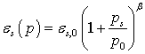 |
where β is the compressibility index and p0 the compression modulus.
Figure 7 shows the packing densities of the filter cake for the given consolidation pressures. By logarithmic plotting of ln εs versus ln(1+ps/p0) the compressibility index can be achieved. The results in figure 7 show, that larger pressures lead to more compact filter cakes. The compressibility of the flocculated cake (slope of the curve) is higher compared to the stable suspension and can be categorized as very compressible. The simulation results agree quantitatively with the experimental values.
The contact forces during filtration and consolidation are computed for every time step. Because of the decreasing number of particle contacts in a flocculated filter cake the contact force is ca. 70% higher. The average contact force after the filtration process for a filtration pressure of p=200kPa is FK=3.06μN for the stable case and FK=5.27μN in the flocculated case. The porous solid matrix of the flocculated filter cake is preserved due to the adhesive surface forces.
5. Conclusion
In this work the expression dynamics of ultrafine limestone suspensions with and without electrolyte were determined using a dynamic process model. The model results were compared with the experimental tests. A Press-Shear-Cell was used to investigate the expression behaviour of the consolidated particle packings and to measure the most important material properties, i.e. packing density εs, permeability k and filter cake resistance α for different filter cakes.
It was shown that the time dependency of specific filtrate volume and cake height for the flocculated and non-flocculated suspension can be predicted by DEM-CFD simulation. It is observed that a flocculation causes an increase in porosity and permeability of the filter cake. The filtration times are decreasing. Due to the flocculation the particles are coagulating and interfere themselves so that no dense packing can be developed. That's why the filtration resistance and packing density are reaching the lowest values. The flow rate during generation and compression of the porous ultrafine particle packings were simulated within the micro range. After the filtration process the filter cake was consolidated stepwise between p=200-1000 kPa. By fitting the compressibility index was achieved. The compressibility of the flocculated filter cakes is much higher compared to the stable suspensions and can be categorized as very compressible.
The difference between simulation and experimental results of the porosity (4-9% higher porosities in simulation) is mainly caused by the 2D-simulation. A 3D-simulation can minimize the computational error, which is an objective for the future.
Acknowledgements
The authors would like to thank the German Research Foundation (DFG) for financial support.
References
Alt C. (1976) Schlammentwässerung mit Preßfiltern, Chemie Ingenieur Technik 48.- Vol. 2. - pp. 115-124. View Article
Bouillard, J. X., Lyczkowski, R.W., and Gidaspow, D. (1989) Porosity Distributions in a Fluidized Bed with an Immersed Obstacle AIChE Journal 6 : Vol. 35. - pp. 908-922. View Article
Cundall, P. A., Strack, O. D. L. (1979) A discrete numerical model for granular assemblies // Géotechnique 1 : Vol. 29. - pp. 47-65. View Article
Cundall, P.A. A (1971) Computer Model for Simulating Progressive Large Scale Movements in Blocky Rock Systems Proceedings of the Symposium of the International Society of Rock Mechnics, Vol. 1, Paper No. II-8. - 1971.
Derjaguin, B., Landau, L. (1941) Theory of the stability of strongly charged lyophobic sols and of the adhesion of strongly charged particles in solutions of electrolytes Academy of Sciences of the USSR 14- p. 633. View Article
Dong, K. J., Zou, R.P., Yang, R.Y., and Yu, A.B. (2009) DEM simulation of cake formation in sedimentation and filtration. ISSN 0892-6875, Vol. 22, Nr. 11. S. 921-931. View Article
Ergun, S. (1952) Fluid Flow through Packed Columns Chemical Engineering Progress- pp. 89-94.
Fernandez-Varea Garcia-Molina (2000) Hamaker Constants of Systems Involving Water Obtained from a Dielectrical Function that fulfills the f Sum Rule. Journal of Colloid and Interface Science Vol. 231. - pp. 394-397. View Article
Gösele, W. (1995) Grenzflächenkräfte und Fest-Flüssig-Trennung - was der Praktiker davon wissen sollte Filtrieren und Separieren 9- pp. 14-22.
Itasca Consulting Group Inc. (2008) PFC2D, Particle Flow Code in 2 Dimensions [Book]. - Minneapolis
Kawaguchi, T., et. Al (1992) Numerical Simulation of Fluidized Bed Using the Discrete Element Method (the Case of Spouting Bed) JSME B 551 : Vol. 58. - pp. 79-85.
Keller, F., Eichholz, C. und Schäfer, B., Nirschl, H. (2011) Numerical Simulation of Agglomaration and filtration of colloidal suspensions. FILTECH 2011 Proceedings Vol. 1. S.570-577. View Article
Mladenchev, T. (2007) Modellierung des Filtrations- und Fließverhaltens von ultrafeinen, kompressiblen flüssigkeitsgesättigten Partikelpackungen, Dissertation, Uni Magdeburg [Book]
Patankar, S. V. (1980) Numerical Heat Transfer and Fluid Flow Hemisphere Publishing
Reichmann, B. and Tomas, J. (2001) Expression behaviour of fine particle suspensions and the consolidated cake strength Powder Technology 2-3 : Vol. 121. - pp. 182-189. View Article
Reichmann B. and Tomas, J. (2000) Expression dynamics of finest particle suspensions Filtration & Separation 5 : Vol. 37. - pp. 45-49. View Article
Reichmann B. (1999) Modellierung der Filtrations- und Konsolidierungsdynamik beim Auspressen feindisperser Partikelsysteme, Dissertation, Universität Magdeburg [Book]
Santiwong, SR, Guan, J. and TD, Waite. (2008) Effect of ionic strength and pH on hydraulic prperties and structure of accumulating solid assemblages during microfiltration and montmorillonite suspensions. Journal of Colloid & Interface Science, 317(1). S. 214-27. View Article
Schafer, B., Hecht, M., Harting, J., Nirschl, H. (2010) Agglomaration and filtration of colloidal suspensions with DLVO interactions in simulation and experiment. Journal of Colloid & Interface Science, 349(1). S. 186-95. View Article
Shimizu, Y., Hart, R., and Cundal, P.A. (2004) Fluid Coupling in PFC2D and PFC3D Numerical Modeling in Micromechanics via Particle Methods (Proceedings of the 2nd International PFC Symposium, Kyoto, Japan, 2004).- pp. 281-287.
Shirato, M. and Tiller (1987), F. M. Fitlration in the Chemical Process Industry, Chapter 6 Filtration-Principles and Practices / ed. Inc. Marcel Dekker. - New York : [s.n.]
Shirato, M., Murase, T., and Iwata, M. (1986), M. Deliquoring by Expression - Theory and Practice Progress in Filtration and Separation Vol. 4. - Amsterdam View Article
Tsuji, Y T., Kawaguchi, T., and Tanaka, T. (1993) Discrete Particle Simulation of Two-Dimensional Fluidized Bed Powder Tech., 77- pp. 79-87. View Article
Verwey, E. J. W., Overbeek, J. T. G. (1948) Theory of the stability of lyophilic colloids. The interaction of sol particles having an electrical double layer Elsevier. – Amsterdam
Wen C.Y. and Yu, Y. H. (1966) Mechanics of Fluidiszation Chemical Engineering Progress Symposium series 62- pp. 100-111./span>